STRAIT
A portable ground-imaging instrument: electrical resistivity tomography, with an earlier FMCW radar version. I led the engineering design team. We won the state TSA Engineering Design title, a first for my school.
- electrodes
- 8
- electrode spacing
- 10 cm
- ADC resolution
- 16-bit
- amplifier gain
- 1001
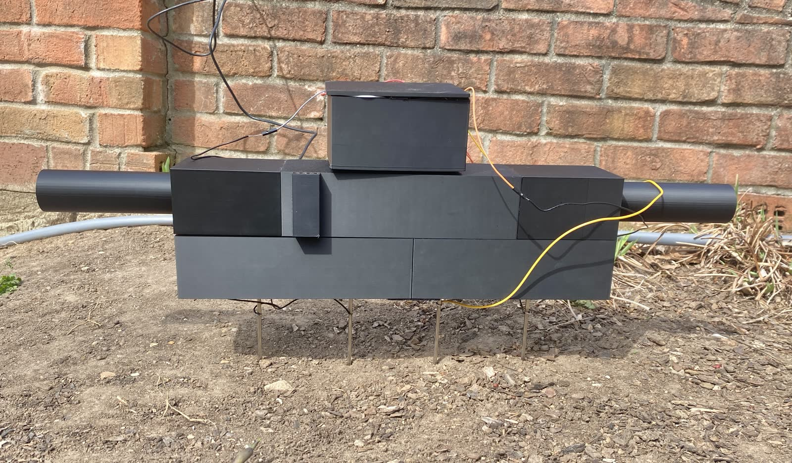
01 How it works
STRAIT pushes a known current into the ground through two electrodes and measures the small voltage between two others. The ratio says how strongly the ground resists current: air gaps and dry sand resist more, wet soil and metal resist less.
Eight brass electrodes sit in a line, 10 cm apart. In the final build the two end electrodes inject the current, and the multiplexers step the measuring pair along the six between them. Each position gives one reading; together they build a picture of the ground underneath.
Each reading is a few millivolts, so the amplifier and a 16-bit ADC do most of the work.
- Power A 5 V USB power bank, boosted to about 12 V for the current source only.
- Current source A Howland current pump (LM324, TL431 reference) drives current between the injecting electrodes.
- Switching Two CD74HC4067 multiplexers choose which electrodes measure.
- Measuring An INA333 instrumentation amplifier (gain 1001) reads the voltage between the measuring pair.
- Converting Two ADS1115 16-bit ADCs read that voltage and the real current through a 10 Ω sense resistor.
- Computing A Teensy 4.0 runs the sweep, works out resistivity and sends the readings over USB as CSV.
![Block diagram of the signal chain. A 5 V USB power bank feeds an MT3608 boost converter (about 12 V), which powers a current source (LM324, TL431, 2N3904). Current flows through the soil from electrode A to B with a 10 ohm sense resistor in the loop. An electrode multiplexer (CD74HC4067) assigns the A, B, M and N roles. An instrumentation amplifier measures M minus N; two ADS1115 ADCs read the voltage (address 0x48) and the current (0x49); a Teensy 4.0 runs the sweep, computes resistivity and sends CSV over USB. A note says the Teensy pins are 3.3 V only.](assets/strait/signal-chain.png)
02 The circuit
The Teensy's pins are 3.3 V only, so the 12 V rail feeds nothing but the op-amp's supply, and every logic line and pull-up stays at 3.3 V. A single-supply INA333 replaced an earlier dual-rail amplifier and the isolated ±5 V converter it needed. The amplifier's reference voltage is read live and subtracted in firmware, so drift cancels out.
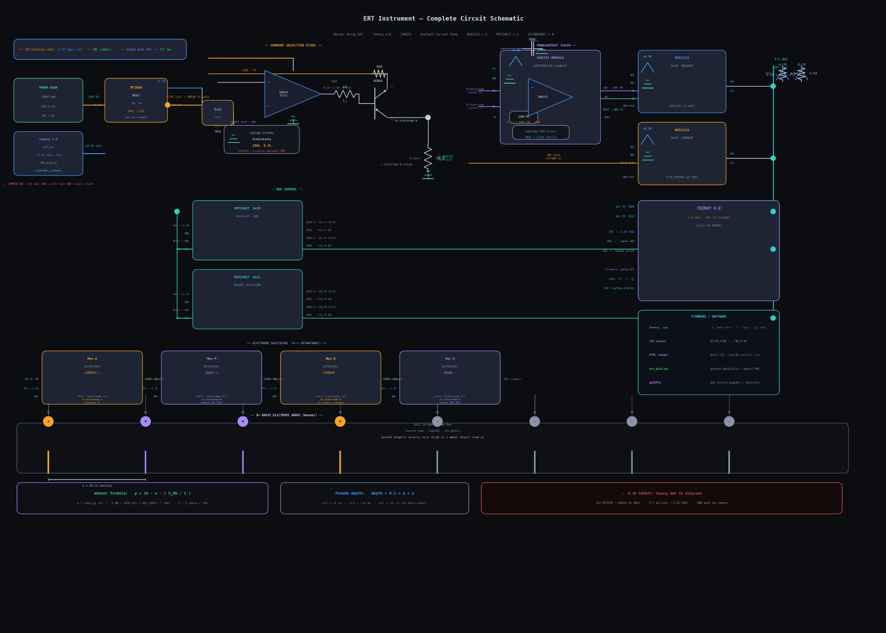
03 The build
Everything fits in a 200 × 150 mm junction box: the Teensy and ADCs on top, one stripboard with the multiplexers, amplifier and current source, and the power bank on a Velcro shelf. The electrodes connect through screw terminals on the long side.

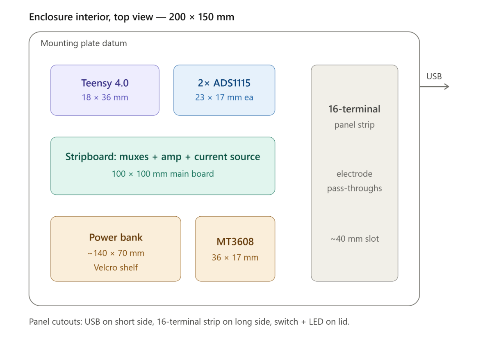

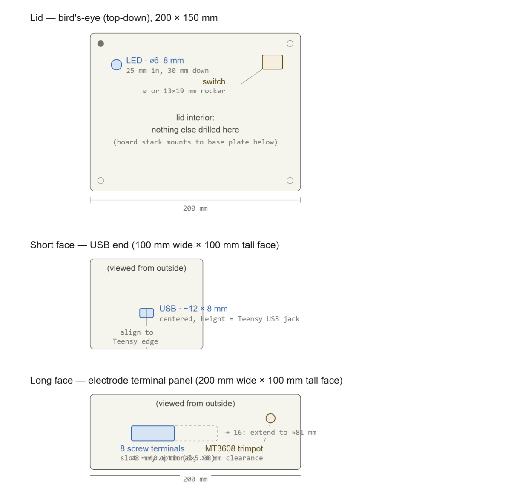
Photos

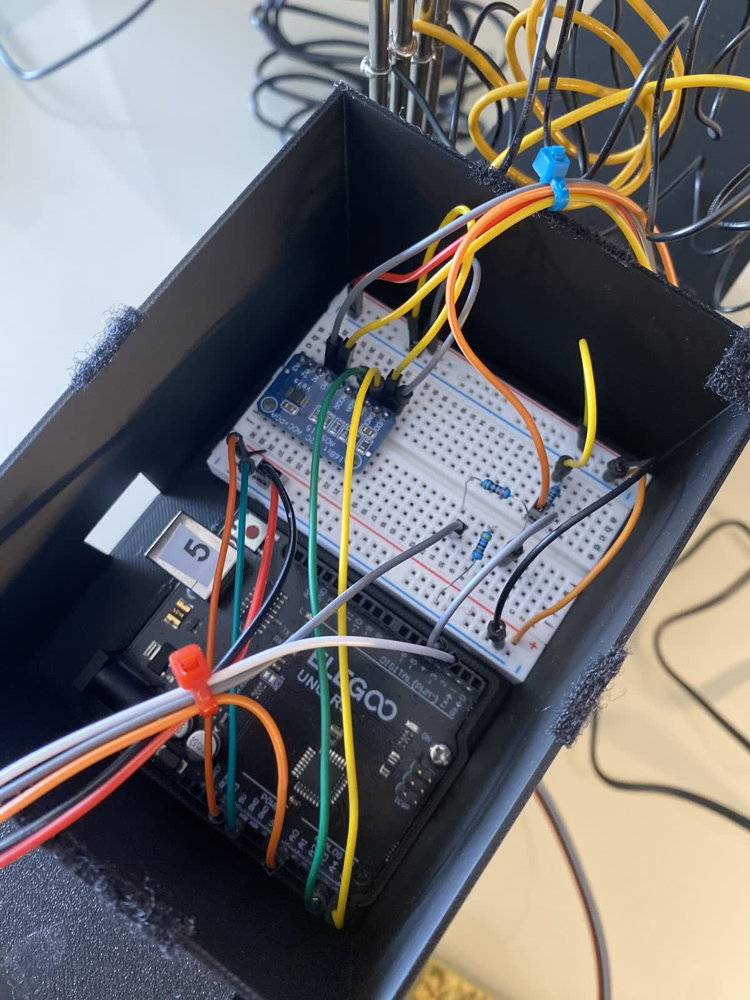

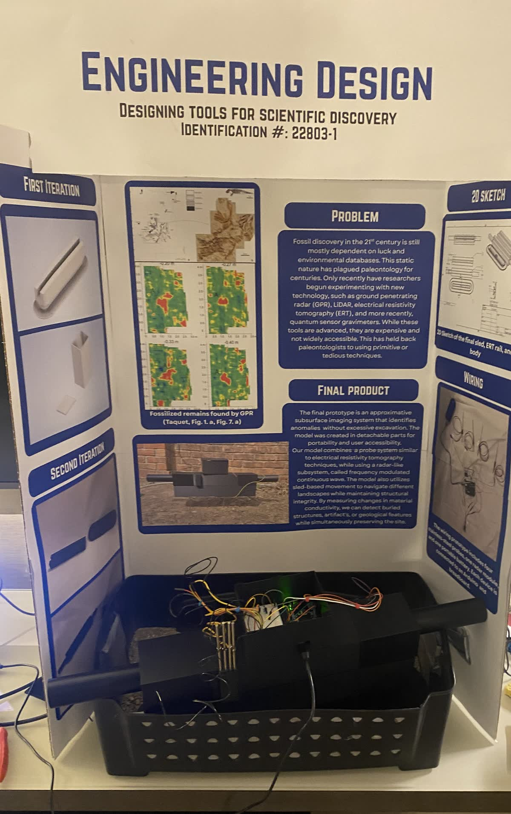

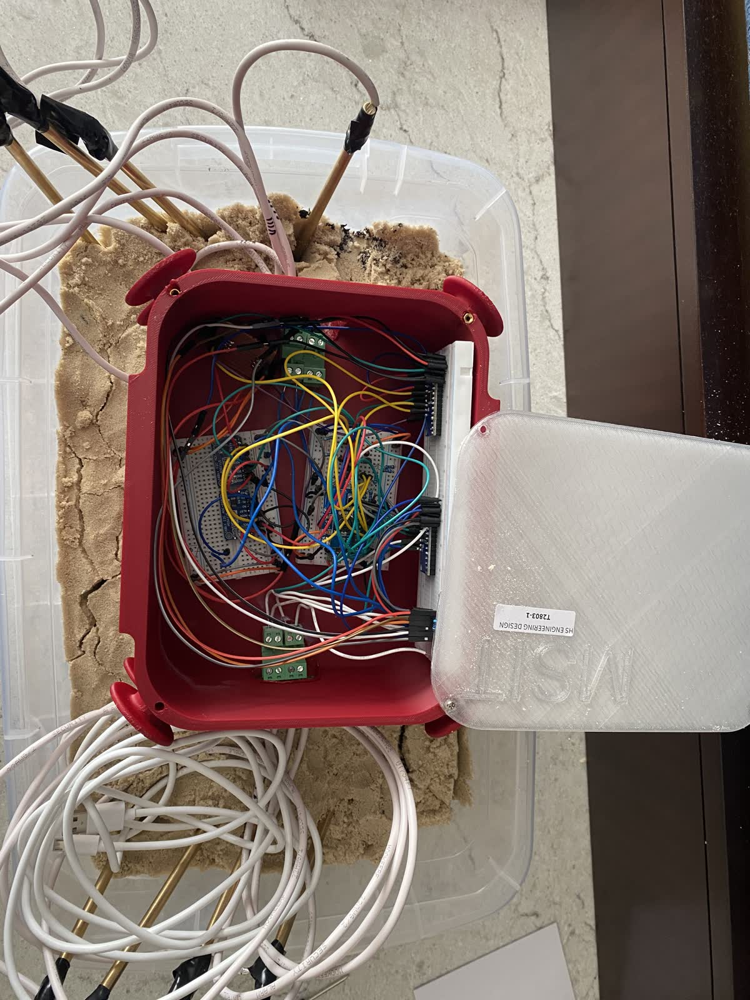

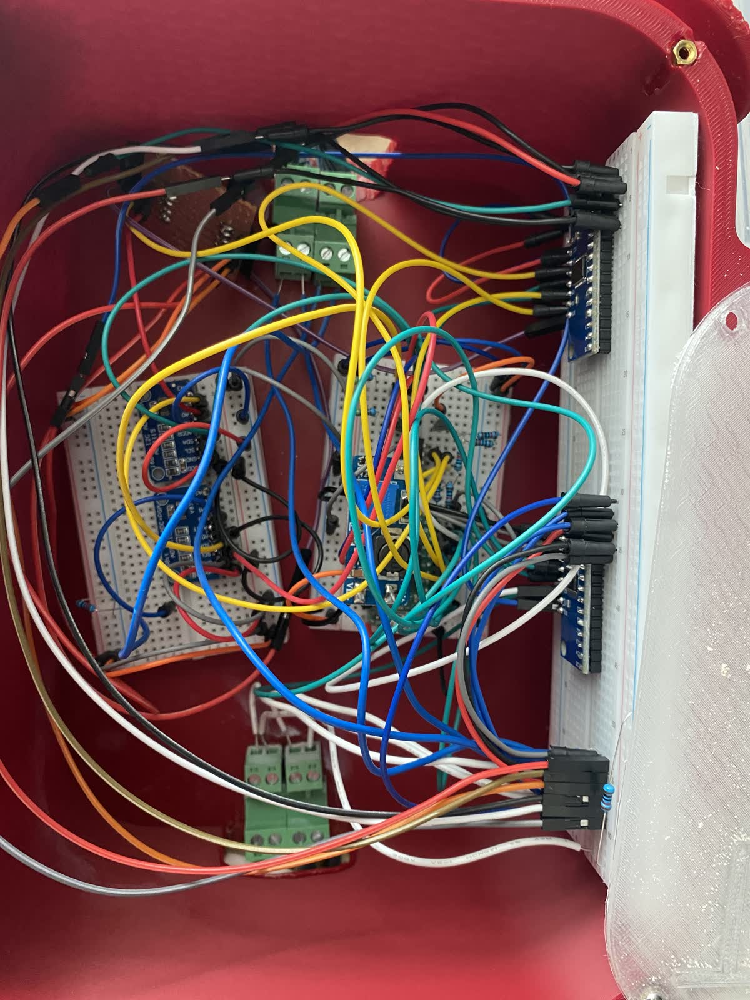

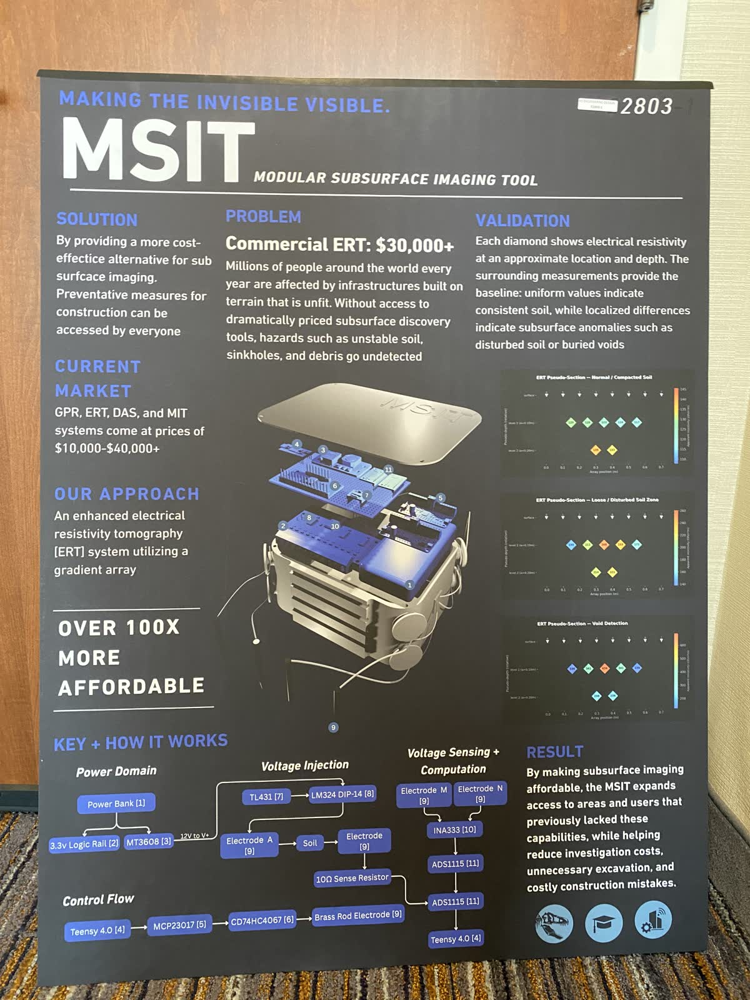
Priced parts list
| Part | Qty | Cost |
|---|---|---|
| Control and switching | ||
| Teensy 4.0 | 1 | $24.25 |
| MCP23017 GPIO expander (later dropped) | 2 | $11.90 |
| CD74HC4067 16-channel multiplexer | 2 | $7.00 |
| ADS1115 16-bit ADC | 2 | $7.33 |
| BSS138 logic level shifter | 2 | $4.00 |
| Signal chain | ||
| INA333 instrumentation amplifier module | 1 | $11.99 |
| LM324 quad op-amp | 1 | $0.60 |
| TL431 voltage reference | 1 | $0.70 |
| Power | ||
| MT3608 boost converter | 1 | $2.50 |
| USB power bank, 10,000 mAh | 1 | $10.00 |
| Electrodes and wiring | ||
| Brass rod, 1/4 in × 12 in | 8 | $12.00 |
| Shielded 22 AWG cable | 1 roll | $20.00 |
| Screw terminal block, 4-position | 2 | $3.00 |
| Passives | ||
| 10 kΩ 0.1% resistors (current pump) | 4 | $2.00 |
| 10 kΩ 1% resistors (reference divider) | 2 | $0.10 |
| 4.7 kΩ resistors (I2C pull-ups) | 2 | $0.10 |
| 10 Ω 1% sense resistor | 1 | $0.30 |
| 100 nF capacitors | 3 | $0.15 |
| Build and enclosure | ||
| Perfboard, 100 × 100 mm | 2 | $6.00 |
| Junction box, 200 × 150 × 90 mm | 1 | $8.00 |
| M2.5 standoff kit | 1 | $5.00 |
| Resistor kit | 1 | $10.00 |
| Capacitor kit | 1 | $8.00 |
| Hookup wire kit, 22 AWG | 1 | $8.00 |
| Heat-shrink and USB cable | 1 | $7.00 |
| Digital multimeter | 1 | $25.00 |
| Solderless breadboard | 2 | $10.00 |
| Total of these lines | $204.92 | |
Prices from Amazon and Digi-Key at the time of the build, for the smallest pack available.
04 Example scan
These two plots come from an example data file, not a field scan. They show what the software does with a sweep: the pseudosection places each reading under its electrodes, and the inversion turns those readings into an estimate of the resistivity at each depth.
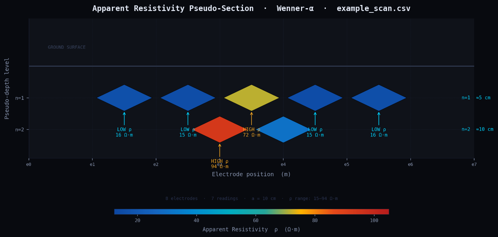
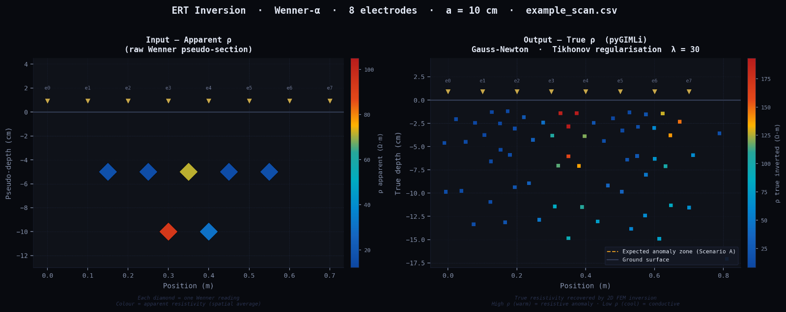
05 The radar version
The first version paired four resistivity probes with a 24 GHz FMCW radar module on an Arduino, and logged both channels together. Radar could not see through soil, so the final build dropped it and kept resistivity.
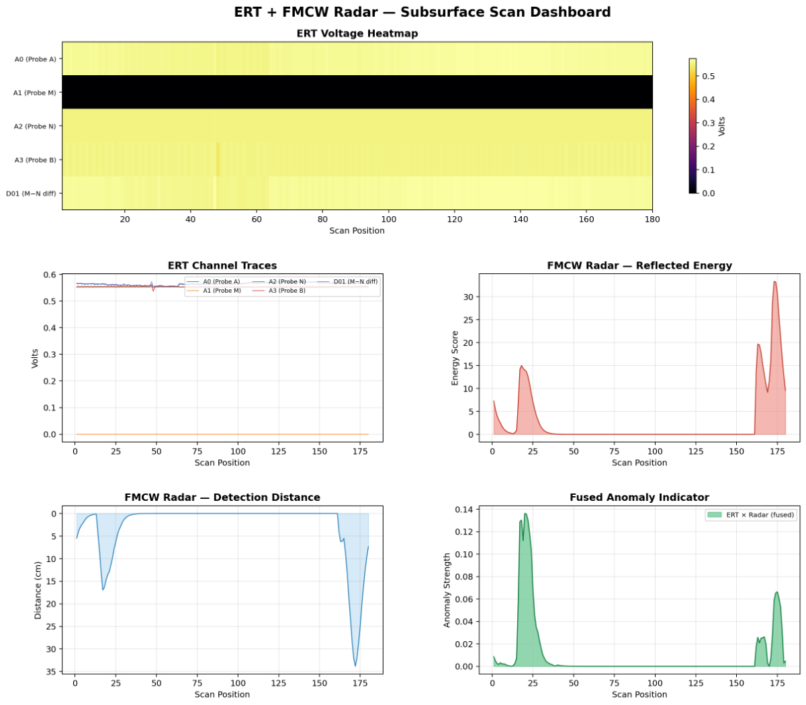
06 The code
The radar version's firmware, analysis script and parts list are public: github.com/rjw-create/ert-fmcw-radar.
07 Documents
Our documents from the state and national competitions.
-
Electrode rail sketch
- Competition
- State, February 2026
- Format
- PDF, 1 scanned page, 541 KB
A hand sketch of the electrode rail on graph paper: a 414 mm rail with a row of 3.95 mm holes, its 80 mm cross-section and the angle of its slot.
-
Project documentation
- Competition
- Nationals, June 2026
- Format
- Web page, 19 sections
The full write-up: the theory, signal chain, current pump, amplifier, firmware, the complete parts list, build steps, problems and fixes, and expected results.
-
Trifold poster
- Competition
- Nationals, June 2026
- Format
- PDF, 1 page, 28 × 36 in, 89 KB
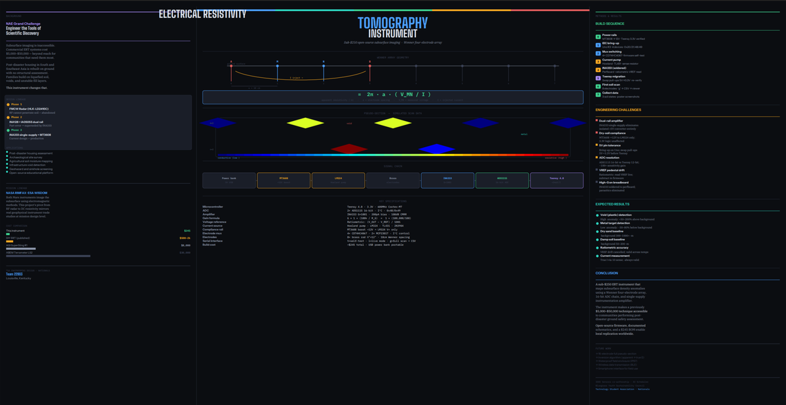
The poster for the display board: the problem, how it measures, the signal chain, the specifications and the results we expected.